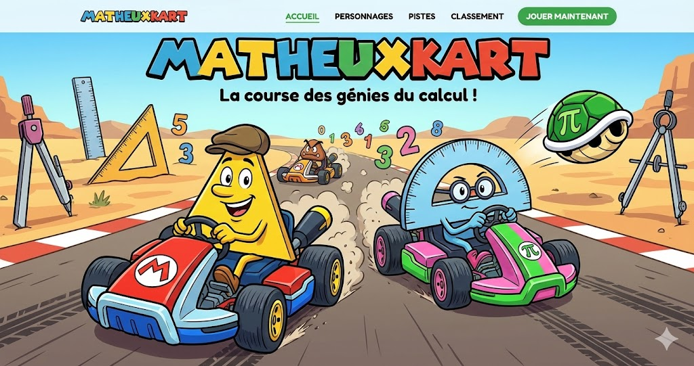

MatheuxKart
Jeu · Mathématiques
Un jeu de course mathématique pour réviser en s'amusant. Créé par François Fatoux.
Accéder10+ outils IA pour l'éducation, non présents dans le livre. Mis à jour régulièrement avec de nouvelles découvertes.
Utilisez des modèles d'IA directement sur votre ordinateur, sans envoyer de données à l'extérieur. Idéal pour les personnels de direction et les établissements soucieux de la confidentialité.
Découvrez pourquoi l'IA locale est pertinente pour le monde éducatif : vie privée des élèves, RGPD, et indépendance vis-à-vis des services cloud.
Guide pratique pour installer et utiliser Ollama sur votre machine. Apprenez à exécuter des modèles comme Llama, Mistral ou Gemma en local.
Voici ici quelques exemples d'applications créées en no code, via Gemini 3.0 et Antigravity (la plupart du temps) voire GoogleAi studio. Merci à François Fatoux pour son imagination incroyable et pour tous ces outils plus géniaux les uns que les autres !

Jeu · Mathématiques
Un jeu de course mathématique pour réviser en s'amusant. Créé par François Fatoux.
AccéderExercices · Collège
Pour s'entraîner sur les automatismes avant la 3ème.
AccéderBrevet · Révisions
Spécialement conçu pour les révisions des automatismes du Brevet.
AccéderQuiz · Flashcards · Gamification
Gagner, Apprendre et Mémoriser avec l'IA. Outil de la Forge des Communs Numériques utilisant l'IA souveraine Albert pour générer quiz, flashcards et défis chronométrés. Hébergé sur les serveurs de l'Éducation nationale — aucune donnée ne quitte la France.
DécouvrirQuiz · Cartes mentales
Créez des cartes mentales et des quiz interactifs avec l'IA. Parfait pour la révision et la mémorisation.
DécouvrirSuite complète
Suite complète d'outils IA pour l'éducation : assistant IA, création de contenus, correction automatique. Hébergement européen.
DécouvrirChatbot IA
Chatbot IA développé en Suisse, respectueux de la vie privée. Idéal pour une première approche de l'IA avec les élèves.
DécouvrirAdministration
Outils IA pour simplifier les tâches administratives : rédaction de bulletins, génération de commentaires personnalisés.
DécouvrirQuiz · Images
Suite d'outils IA développés par l'EPFL. Génération de quiz, analyse d'images, et plus encore. Open source et gratuit.
DécouvrirQuiz · Flashcards · Mindmap
Plateforme tout-en-un pour la révision : flashcards générées par IA, cartes mentales automatiques, quiz adaptatifs.
DécouvrirDocuments LaTeX
Outil spécialisé pour les documents mathématiques et scientifiques. Analyse et génération de contenu LaTeX. *Compte OpenAI requis.
DécouvrirRecherche
Moteur de recherche IA pour la recherche académique. Synthèse automatique de documents et citations.
DécouvrirImages · QR codes
Générez des QR codes artistiques avec l'IA. Parfait pour créer des supports de cours originaux et attractifs.
DécouvrirLangues
Le mode conversation de Google Traduction permet des échanges oraux en temps réel. Idéal pour les cours de langues.
DécouvrirCréation d'activités · ELEA
Application web de la Forge Éducation pour créer des activités interactives avec IA. Prompts génératives prêtes à l'emploi pour ELEA et Magistère.
DécouvrirMémorisation · Révisions
Outil Primabord pour planifier automatiquement les rappels mémoriels et optimiser la mémorisation des élèves. Très accessible et modulable.
DécouvrirSynthèse · Révisions · Quiz
Transformez vos documents en podcast audio, guide de révision ou quiz.
Usages enseignants : préparer ses cours à partir d'un corpus,
résumer des ressources institutionnelles, créer des quiz de révision,
analyser des données d'évaluation et gagner du temps.
Nouveau (Fév 2026) : Génération de slides PowerPoint et révision par
prompt.
Chatbot · Comparaison
Accédez à tous les meilleurs modèles (Claude, GPT-4, Mistral) au même endroit.
Idéal pour comparer les réponses.
Complément : LMSYS Arena pour tester à
l'aveugle.
Comparateur de LLM · Souveraineté
L'outil officiel de l'État (beta.gouv) pour comparer les performances des modèles (dont les modèles souverains). Une alternative éthique et sécurisée.
DécouvrirCréation E-learning · H5P
Transformez n'importe quel document (PDF, vidéo, audio) en module d'apprentissage interactif (H5P) prêt à être intégré dans Moodle.
DécouvrirTexte à Parole (TTS)
Donnez vie à vos textes avec l'IA. Interface respectueuse des données, idéale pour l'accessibilité et les projets créatifs.
DécouvrirTutoriels vidéo
Créez des tutoriels vidéo et des guides pas à pas en quelques secondes. L'IA capture vos actions et génère la voix off explicative.
DécouvrirSchématisation · Visuels pédagogiques
Collez un texte et obtenez instantanément des schémas visuels pédagogiques (cycle de l'eau, schéma narratif, flux migratoires…). Idéal pour préparer des supports de cours clairs et prêts à projeter.
Découvrir